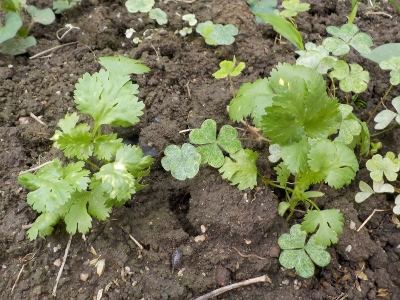
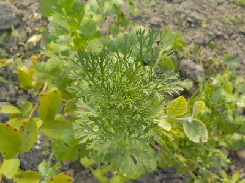
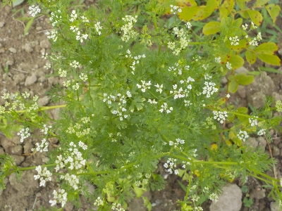

更新日 : 2026/06/21

去年も育てたんですが、あんまり育ちませんでした。
去年採ったタネを今年蒔いたんですが、今年も小さい。
このままだと今年も食べずに花を見てタネを採取するだけかな。
更新日 : 2026/07/26

背が高くなって細い葉っぱが出てきました。もうすぐ花が咲くんですね。
量が少ないので食べる気はしないんですが、花見はするつもりでいます。
更新日 : 2026/08/16

去年はこんなにいっぱい花が咲かなかったですが、今年は大量です。何株も並んでたら見栄えが良かったでしょうね。
来年はパクチーの花を1列作りたいな。
なかなか育たないパクチー
【おいしいものを食べよう。】【たくさん寝よう。】
【ソロ活をしよう!】【季節感のあることをしよう。】【動画視聴はほどほどに。】【当サイトの全てのコンテンツは無断転載禁止です。】